Исторические и справочные гербы

Dublin
Guide. Places in this edition: 12.
OTIUM is the practice of deliberate leisure. In the classical sense, otium is not escape from work but time when attention returns to memory, landscape, and thought — without a utilitarian deadline.
We shape routes for lingering, not for checklist tourism. The goal is presence in a place rather than consumption of sights.
OTIUM is not a tour operator. It is an invitation to walk, pause, and leave a route unfinished if the light on a façade deserves another minute.
Исторические и справочные гербы
Guide. Places in this edition: 12.
Дублин — столица Ирландии и главный город острова, порт у устья Лиффи.
Викингское поселение, средневековый The Pale, британский период и независимое государство сформировали литературную и музыкальную традицию. Тринити-колледж, Гиннесс и георгианская застройка — часть узнаваемого облика города.
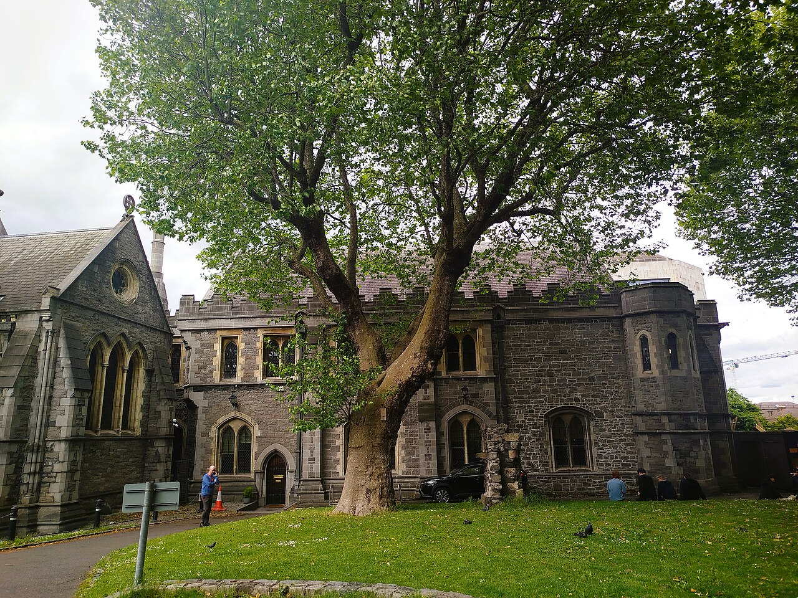
Dublin's older cathedral with crypt café, strongbow tomb traditions, and peal bells above Viking-era foundations.
Sitric Silkbeard's Norse Dublin met medieval diocesan expansion; Victorian architect Street reimagined interiors.
Viking Dublin archaeology display meets working Anglican liturgy.
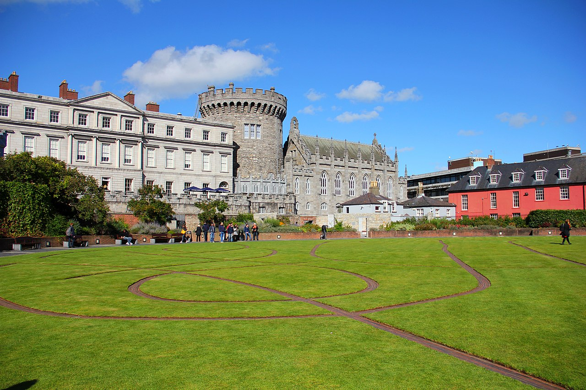
Former viceregal seat with Chester Beatty library wing, Dubhlinn gardens, and guided state apartment tours.
Black Pool (Dubh Linn) fort evolved into British administration hub until 1922 handover ceremonies.
State ceremonial heart of independent Ireland.
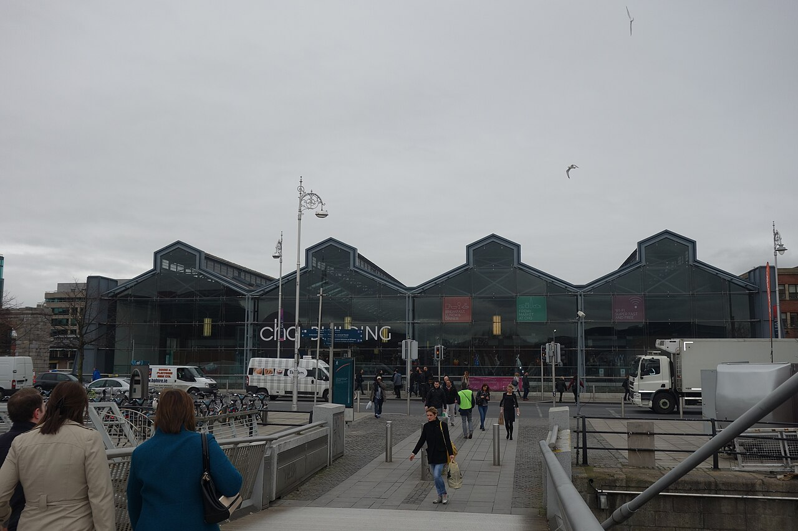
Interactive galleries in docklands vaults tracing Irish diaspora stories by theme and destination.
CHQ building's cellars were adapted rather than demolished during docklands renewal.
Museum answer to 'where did the Irish go?'
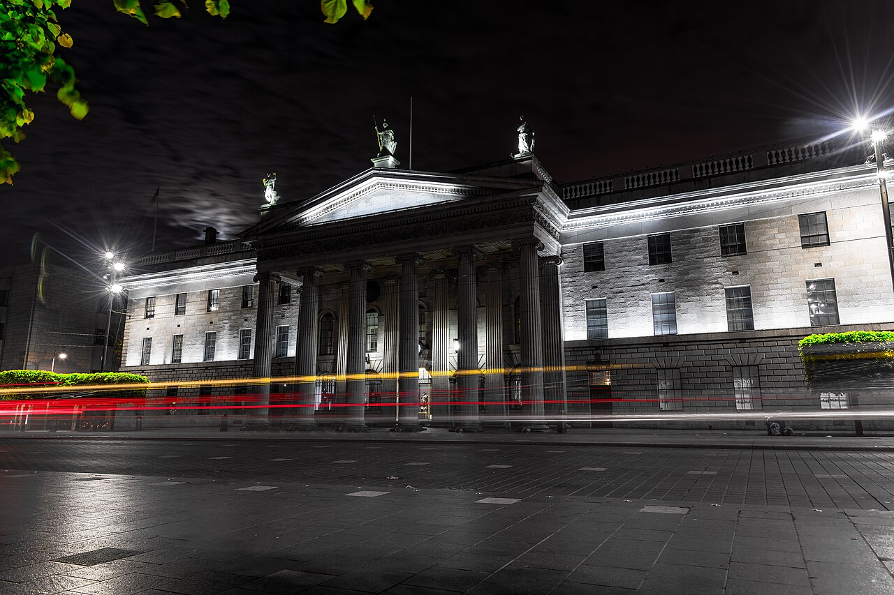
GPO portico still bullet-scarred from 1916 Rising; museum inside narrates rebellion week.
Rebel headquarters under Pearse; shelling destroyed the interior before rebuilding.
Irish state origin story carved in Portland stone.
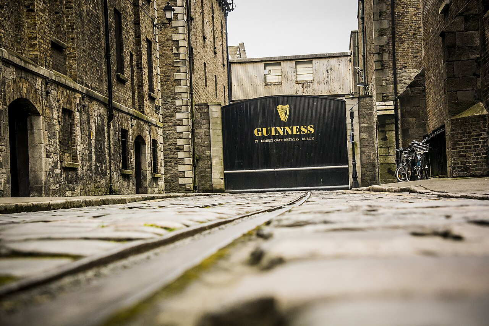
Gravity bar pint with 360° views caps exhibits on ingredients, cooperage, and advertising archives.
Arthur Guinness signed a long lease in 1759; tourism now anchors the Liberties economy.
Ireland's busiest paid attraction and brand pilgrimage.
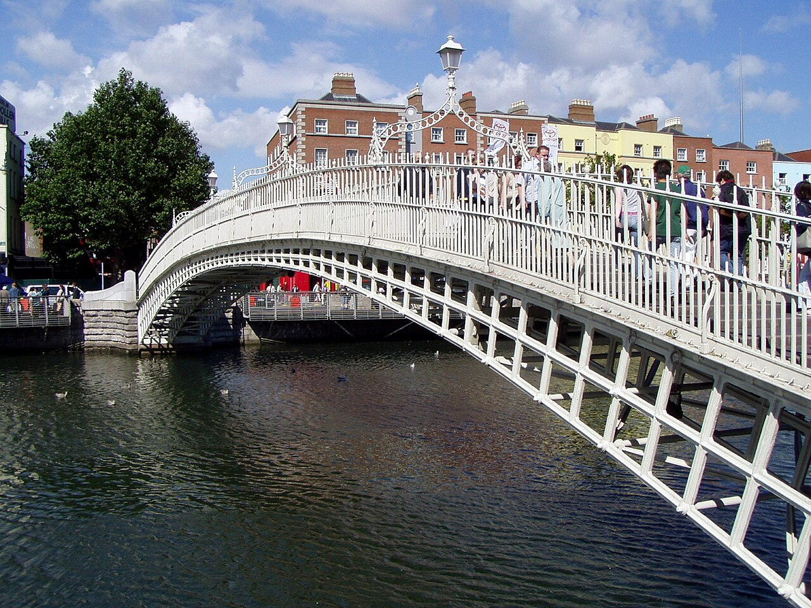
Whitewashed iron footbridge between Temple Bar nightlife and northside quays—constant pedestrian flow day and night.
John Windsor's foundry shipped prefabricated ribs assembled on timber centring over the Liffey.
The intimate scale counterweight to O'Connell Bridge traffic.
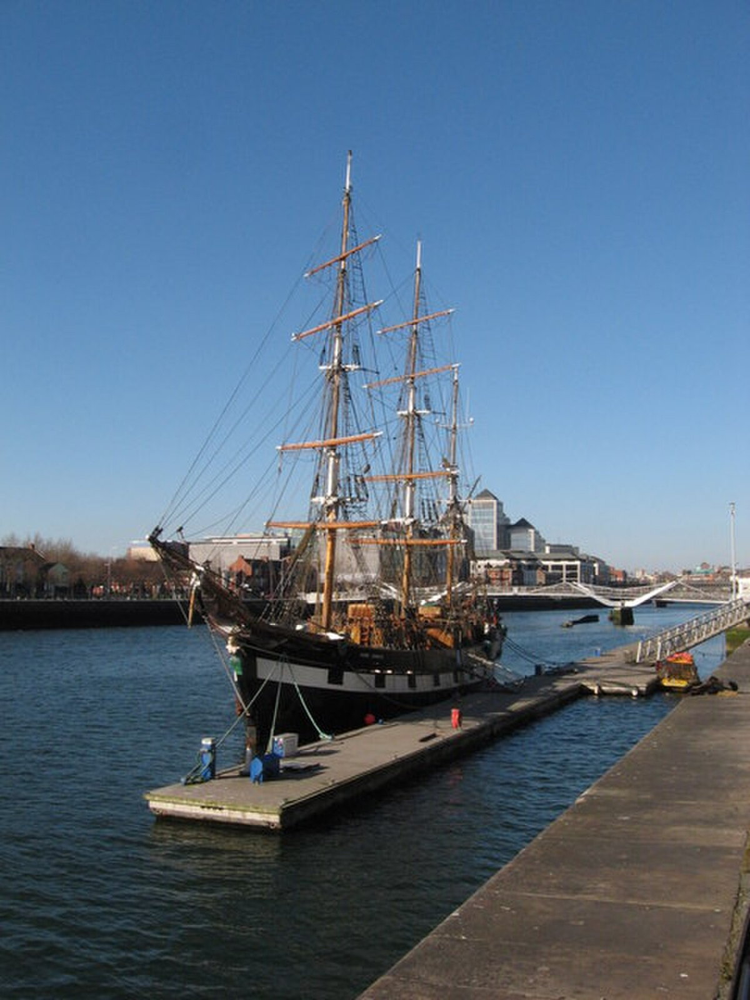
Famine-era emigrant ship replica with guided stories below decks on crossing conditions.
Original carried thousands to North America without losing a life recorded on those voyages.
Tangible famine migration story beside the Liffey.
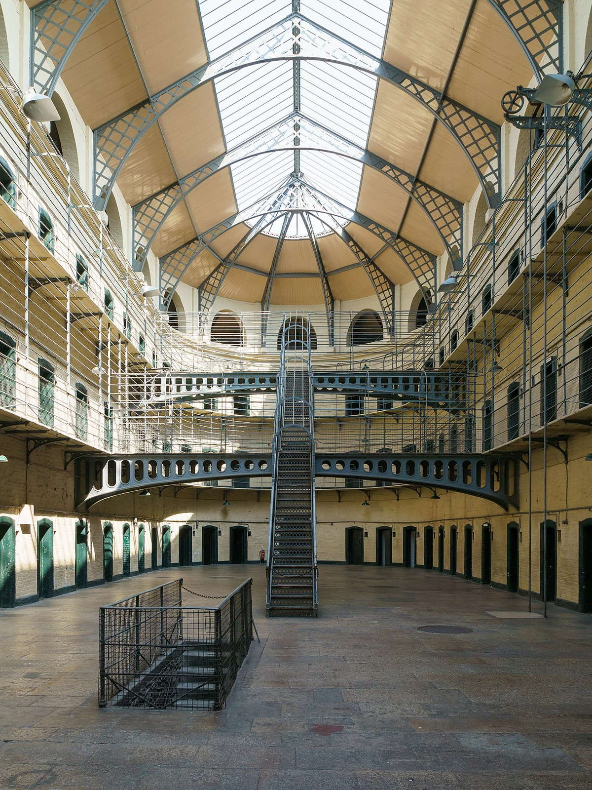
Decommissioned prison interpreting famine-era crimes of poverty and 1916 leaders' final days.
Closed as a working jail in 1924; restoration opened interpretive tours in the 1960s.
Emotional hinge for modern Irish nationalism narratives.
Europe's largest walled city park with wild fallow deer, Áras an Uachtaráin, and Papal Cross clearing.
Charles II's hunting ground became public amenity as the city grew around it.
Green lung between city centre and Chapelizod villages.
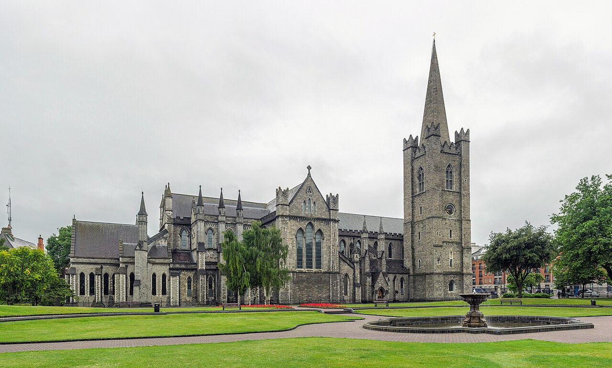
National cathedral with Swift's grave, Boyle monument, and generous churchyard lawns for quiet reading.
Founded beside a holy well; Guinness family funded major Victorian restorations visible in stained glass cycles.
Ireland's largest cathedral nave and a pilgrimage name-brand.
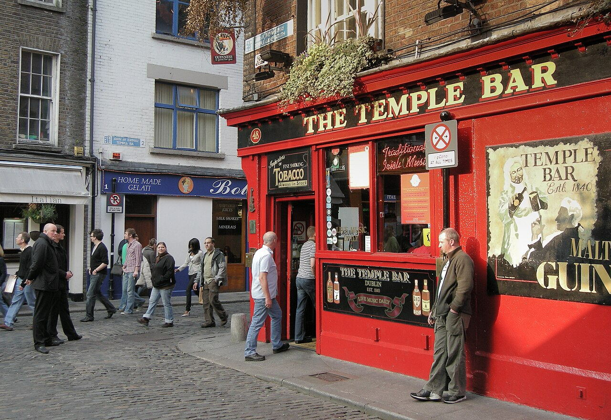
Dense nightlife lanes with buskers, galleries, and the namesake Temple Bar pub façade photos.
Planned cultural quarter saved warehouses from demolition; tourism overtook resident artists.
Default first-night stroll for short city breaks.
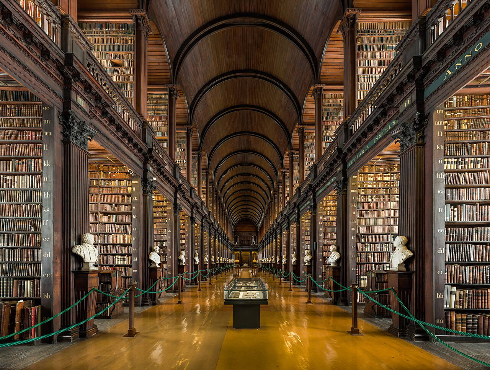
Double-decker book hall displaying busts of writers; Book of Kells exhibition queues into this nave.
Thomas Burgh's chamber held expanding college collections; 2003 roof conservation stabilised the barrel vault.
Ireland's most visited indoor heritage space.